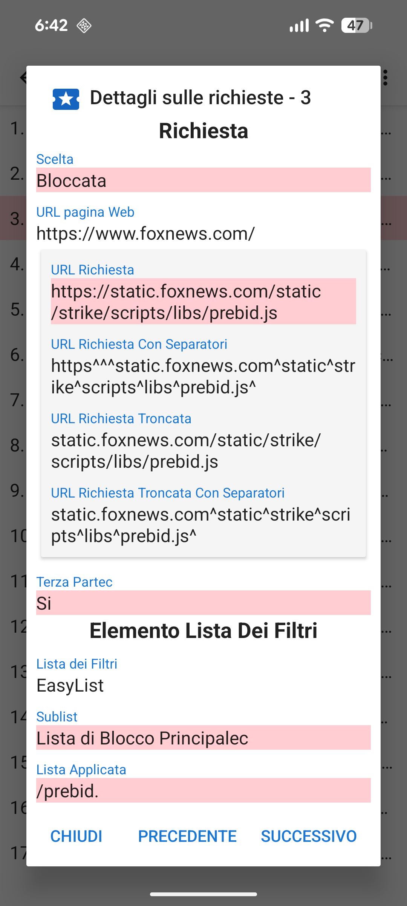
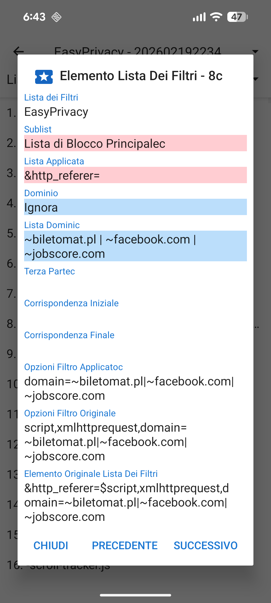

Quando viene caricata un URL, generalmente effettua un certo numero di richieste di risorse per CCS, JavaScript, immagini, e altri files. I dettagli relativi a queste richieste possono essere visualizzati nella scheda delle Richieste. Il menù a cassetto ha un collegamento alla scheda delle richieste e mostra quante sono state bloccate. Se si tocca una delle richieste in elenco vengono mostrati i dettagli sui motivi per cui è stata permessa o bloccata.

Prima che una pagina web carichi una risorsa, questa è confrontatac con la lista dei filtri abilitati secondo il seguente ordine:
Tutte queste liste ad eccezione della prima sono basate sulla sintassi Adblockc. UltraPrivacy e UltraList sono manutenute da Stoutner. Le ultime tre liste di filtri derivano dal Progetto EasyList.
TLe voci grezze delle liste dei filtri sono processate in 6 sotto-liste.
La lista dei domini iniziali effettua il controllo sulla parte inziale del dominio. Questi sono molto comuni e il posizionarli nelle loro sott-liste permette una verifica più efficiente per la CPU della richiesta di risorse. La liste delle espressioni regolari segue la sintassi delle espressioni regolari.
I contenuti delle liste dei filtri può essere visualizzato selezionando Lista dei filtri dal menu delle opzioni (i trec punti nell'angolo in alto a destra) della scheda richieste.

A causa delle limitazioni di Android’s WebView, Privacy Browser implementa una versione semplificata della sintassi Adblock. Una descrizione più dettagliata di come le liste dei filtri sono processate è disponibile su stoutner.com.